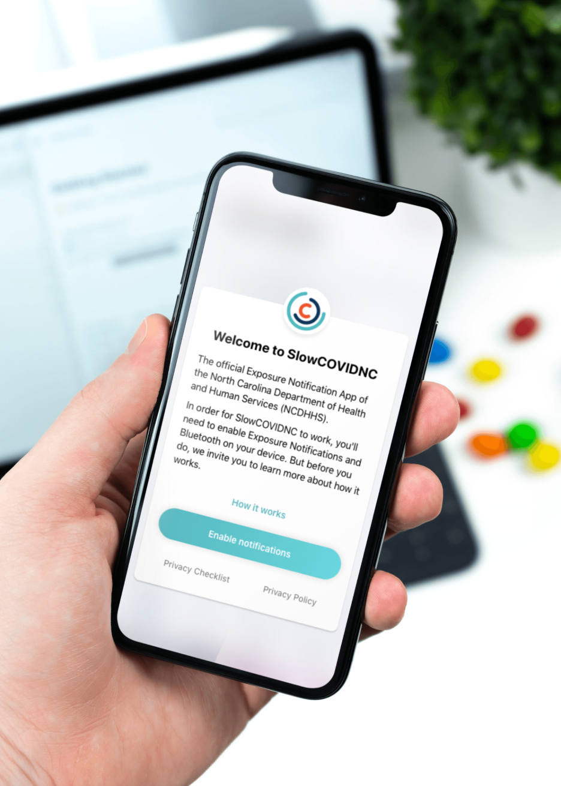
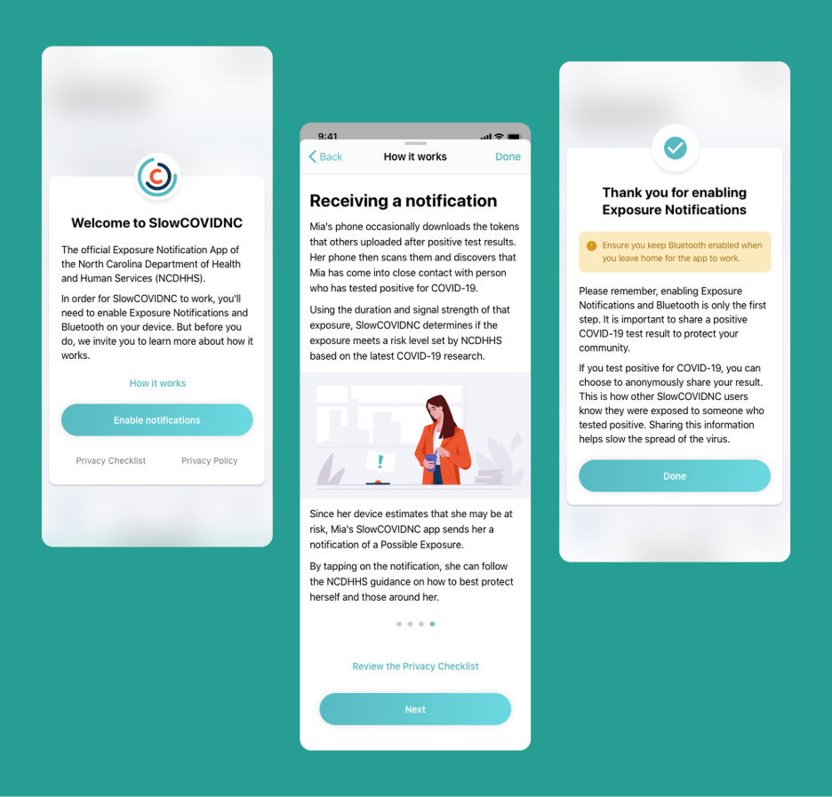
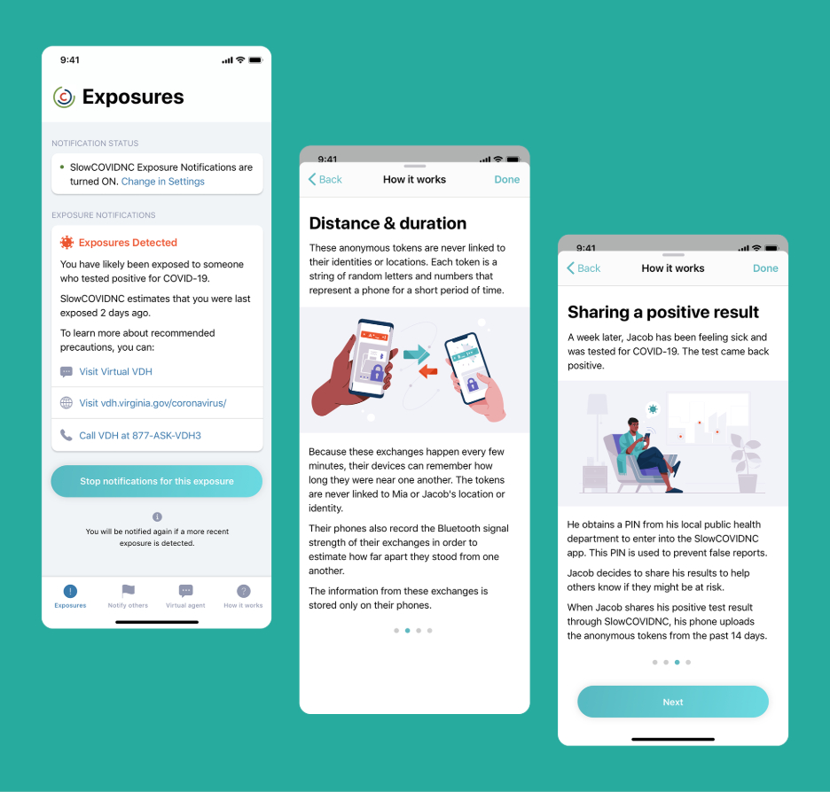
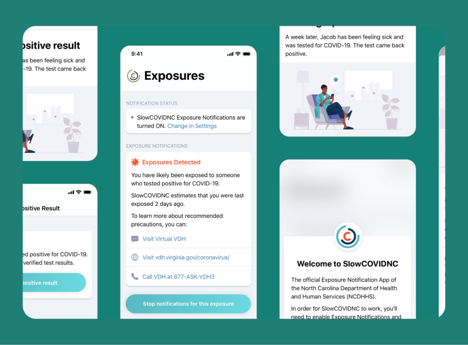
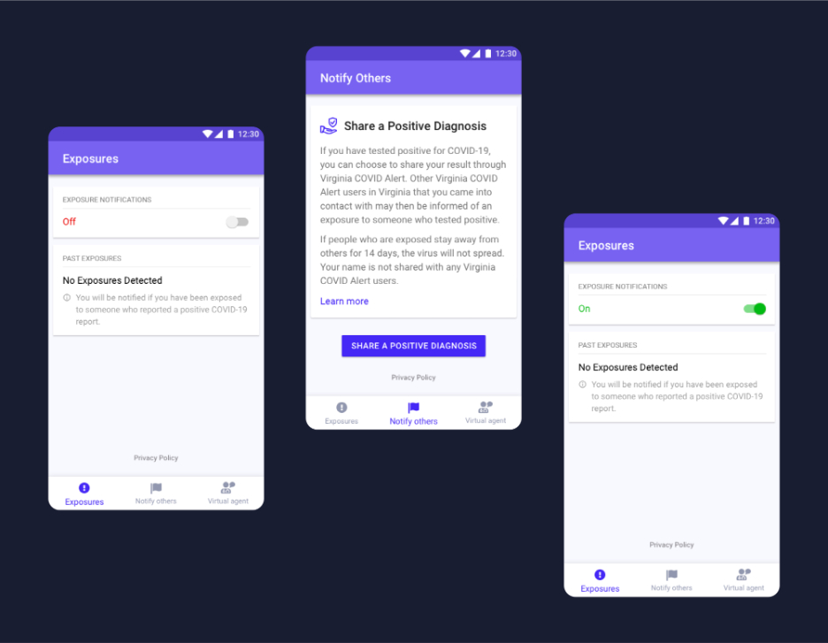
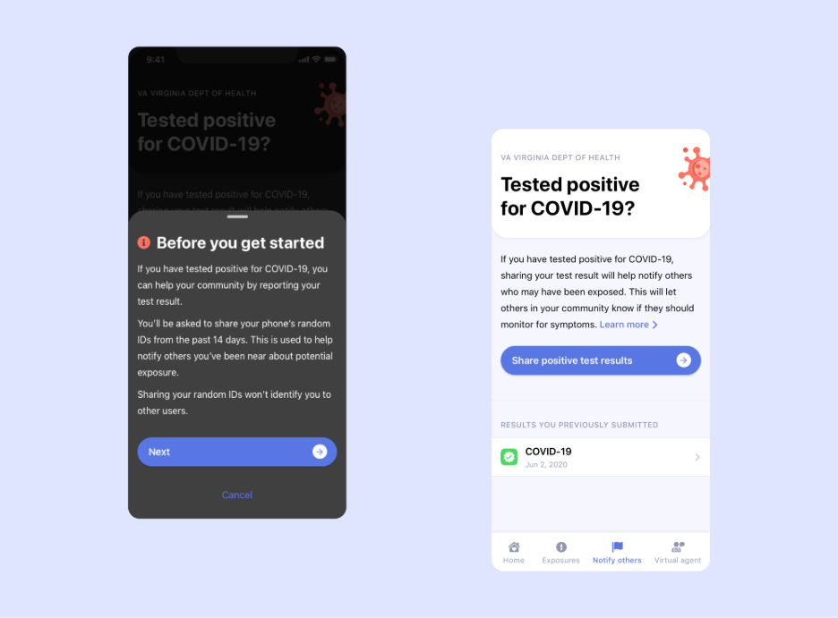
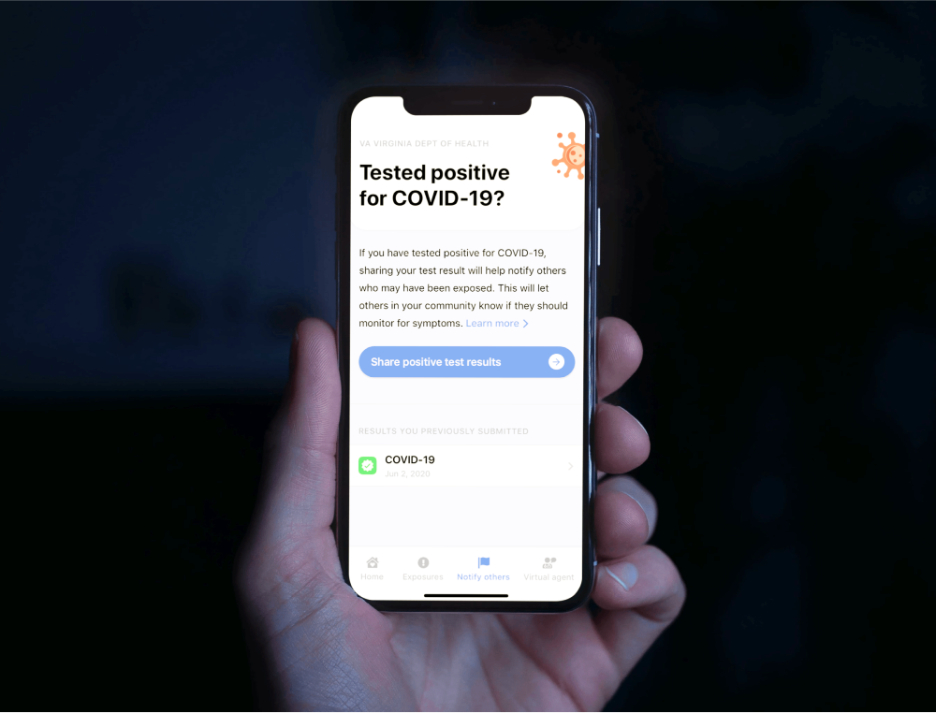

Two states, one job: tell people they were exposed
Overview
SlowCOVIDNC was the first official COVID-19 exposure notification app in the US, for the North Carolina Department of Health and Human Services. COVIDWISE followed for the Virginia Department of Health. Both run on the Apple/Google exposure notification framework.
My role
Product designer with SpringML. App design and user flows for both apps, plus the custom illustrations that explain how the system works.
Team
Timeline
2020
via Toptal

The brief
In 2020 Apple and Google shipped a framework that let phones exchange anonymous Bluetooth tokens and warn people who had been near someone who later tested positive. States had to build the apps on top of it — fast, under public scrutiny, for everyone from teenagers to retirees.
SpringML built the apps; I designed them. The constraint that shaped everything: the technology is privacy-preserving by design, but nobody will enable it unless they understand that. The design problem was trust, not features.
SlowCOVIDNC — North Carolina
Explaining the invisible
The app does almost nothing visible. So onboarding does the explaining: a short "How it works" story with two characters, Mia and Jacob, and custom illustrations for each step — phones exchanging tokens, a notification arriving, sharing a positive result with a PIN from the health department. Plain language, the state's teal, no virus graphics.

The day it matters
The Exposures screen is calm by default and specific when it needs to be: "You have likely been exposed… last exposed 2 days ago", followed by the three things to do next — the health department's virtual visit, its guidance page, and the hotline. Sharing a positive result walks through why the phone asks for a PIN and what is and isn't shared.


COVIDWISE — Virginia
Virginia's app shares the bones of SlowCOVIDNC — the same framework, the same three jobs — in the Virginia Department of Health's purple, with a dark mode. The structure is a tab bar: Exposures, Notify Others, Virtual Agent. "Tested positive for COVID-19?" leads with a short "Before you get started" that says exactly what the phone will share (random IDs from the past 14 days) and what it won't (your identity).



Outcome
SlowCOVIDNC shipped first in the country. COVIDWISE was downloaded 300,000+ times in its first week and reached more than 2.5 million people in Virginia. I can't tell you how many exposures were caught — the system is anonymous by design, which was the point. What I can say is that two state health departments put their name on screens I designed, and people turned the feature on.
Screenshots are from a portfolio export; higher-resolution ones are on the way.